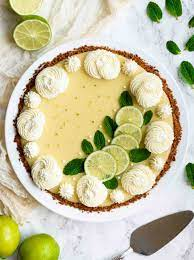

Key Lime Pie

Key lime custard baked in a graham cracker crust. Topped with whipped cream.
If you are a citrus fan and you've never had this dessert, it is certainly deserving of a try.
Ingredients
For the crust:
- 1 1/2 cups finely ground graham crackers (from about 9 crackers, 145g)
- 1/4 cup butter, melted
- 3 tablespoons white granulated sugar
For the filling:
- 1 tablespoon lime zest for filling plus 1/2 teaspoon for the topping
- 3 egg yolks
- 1 14-ounce can sweetened condensed milk
- 1/2 cup lime juice (from about 20 key limes or 4 to 6 regular limes)